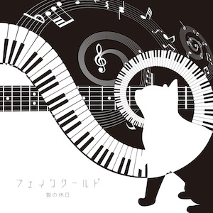

Information
7/25 2nd Albumより「月の光に歌うよ（Piano & Strings mix」のLyric Videoを公開しました。
Blog「月の光に歌うよ（Piano & Strings mix）」のLyric Videoを公開しました もご一緒に
About
(LtoR)take(Ba),tomo(Dr),nano(Gu&Vo) Photo by @Weekendcycler
Discography
2nd mini album「フェイクワールド」

1st mini album「ゴールデンウィーク」
2017/06/28(Wed)
- レッド ライン
- グレイゾーン
- 目覚めたばかりの猫
- 月の光に歌うよ
Movie
猫の休日「ゴールデンウィーク」トレーラー
レッド ライン by 猫の休日
目覚めたばかりの猫 by 猫の休日
猫の休日 - 月の光に歌うよ（Piano & Strings mix）
Live
現在決まっているライブはありません。過去のライブ情報はこちら
2nd live 2018/06/10(日) 東新宿真昼の月・夜の太陽
「Feel it」
@真昼の月・夜の太陽
open/start 17:00/17:30
前売/当日 2300円(ドリンク別)
1st live 2017/11/24(金) 福岡public space四次元
『send up!! vol.110』
@public space四次元
open18:00/start18:30
adv ¥1,500/door ¥2,000
《cast》
Blog
Contact
take.she12[at]gmail.com